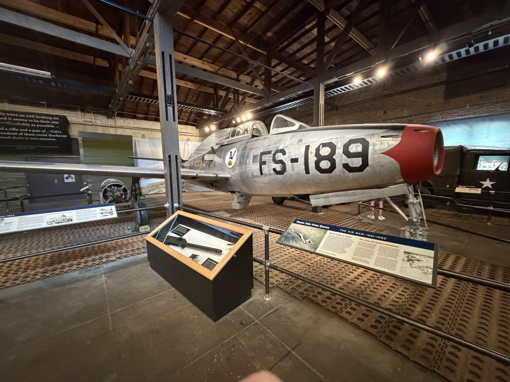
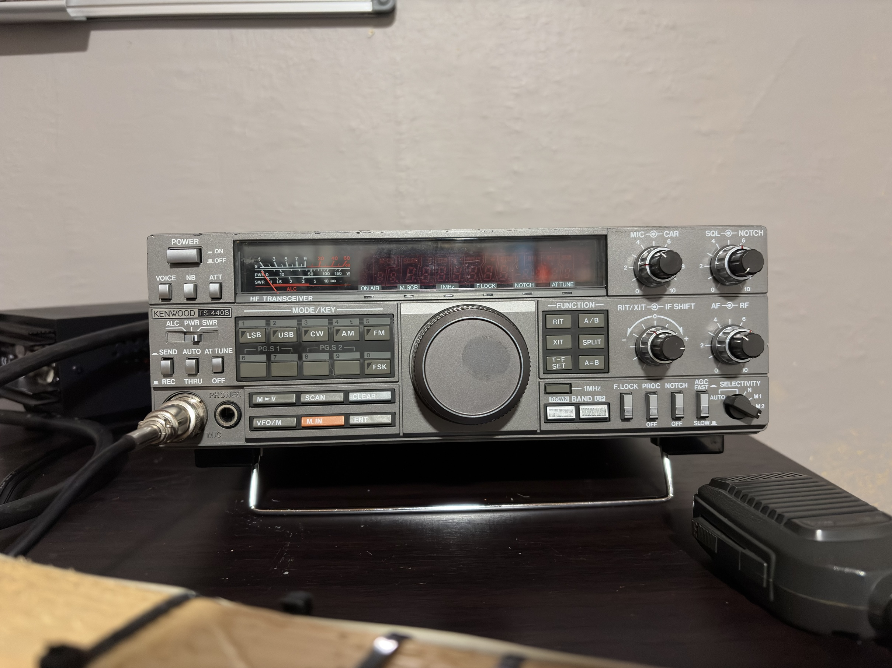

Amateur radio
Licensed operator KJ5OBC
Austin, TX, USA
Amatuer Radio Operator (KJ5OBC), UAV Enthusiast, CAD Designer, Neural Network Attempter.
I enjoy making interactive demos for projects with Arduinos, Raspberry Pis, and ESP-32s. I especially love working with SDRs and wiring up a project after I build it. To pass time between projects, I like to build model aircraft, and play Kerbal Space Program.
Explore current projectsI first got interested in Amateur Radio when my friend told me that the best high school in my city had a radio club, I had previously gotten a book on how to get my license, so I studied, I actually found the whole thing pretty interesting, and now I am currently learning about HF propogation, Antenna Engineering, and studying for my General License.
Licensed operator KJ5OBC
Fixed Wing EDFs and Experimenting with tilt rotor mechanics.
Currently laying out architecture for an AI powered study app.
a small collection of ideas moving from east to west.

I have designed multiple Fixed Wing UAVs in CAD, in addition to one Tilt Rotor UAV. I have printed one of the Fixed Wings, however have since abandoned the project because of the funding needed.

I have some ELITE ball knowledge on WW2, and I love visiting museums with aircraft from that (and the korean war) era. I have a special interest in the Horten Ho229, an unfinished prototype for a flying wing design. (the plane pictured above is NOT a 229, it is an F-84E (used in the korean war).)

I currently operate on a Kenwood TS-440s from the LASA ARC, K5LBJ. I have a homemade 10m dipole I set up to recieve 28.4MHz for SSB, CW, and SSTV (sstvs my fav frfr 🥹). I currently use it for stationary use at home and am in the process of building a radio from scratch for portable use (specifically POTA)

I design many parts in OnShape to provide elegant solutions to problems, such as this camera cover for my dad's iPad. I also enjoy spending time browsing MakerWorld, Printables, and Thingiverse for fun prints to make to pass time.